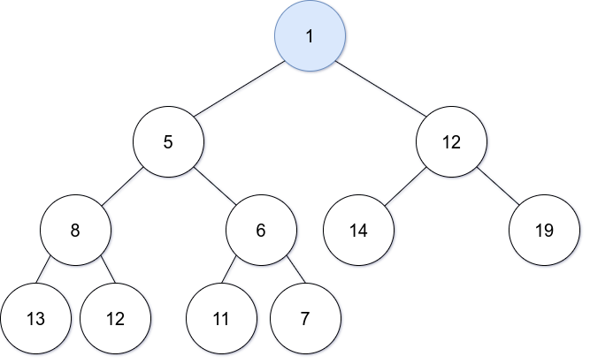
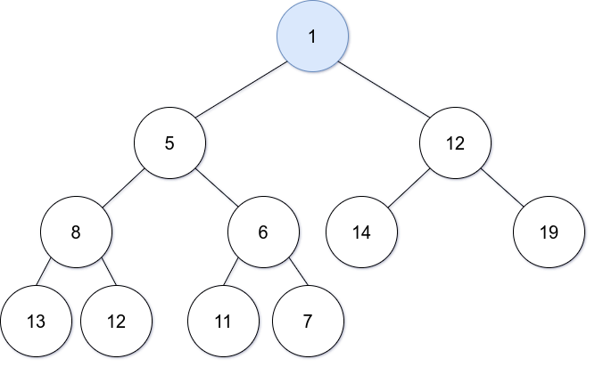

Priority Queues
1 Priority Queues (PQ)
1.1 ¿Que es una PQ?
Es un tipo de dato abstracto (ADT) que opera en forma similar a una cola, excepto que cada elemento tiene cierta prioridad. Esta prioridad define en que orden los elementos son removidos de la cola.
Las colas de prioridad solo soportan datos comparables, de modo que estos puedan ser ordenados de una manera u otra.
Suponga que todos los siguientes valores son insertados en una PQ con un orden dado por los números, en este caso de menor a mayor.

poll() sacamos de la cola al elemento de mayor prioridad.
add(2) agregamos 2 a la cola.
poll().
La maquina sabe cual es el orden de los elementos usando un heap
1.1.1 ¿Que es un heap?
Un heap es una estructura de datos basada en árboles que se basa en lo siguiente.
Si A es un nodo pariente de B entonces A esta ordenada con respecto de B para todos los nodos A, B en el heap.

Estos son Heaps binarios, ya que cada nodo solo va a tener dos ramas.
1.1.2 ¿Cuándo y dónde son usadas las PQ?
- Usadas en ciertas implementaciones de el algoritmo de el camino más corto de Dijkstra
- Cada vez que necesites buscar el sigiente mejor o el siguiente peor elemento
- Usado en codificación de Huffman (el cuál es usado para compresión de datos sin perdida)
- Usado en algoritmos de Best First Search (BFS) como A* que usa PQ para agarrar continuamente el nodo próximo mas prometedor.
- Usado para algoritmos de Minimum Spanning Tree (MST).
1.1.3 Análisis de complejidad
| Binary Heap Construction | \(O(n)\) |
|---|---|
| Polling | \(O(log(n))\) |
| Peeking | \(O(1)\) |
| Adding | \(O(log(n))\) |
| Naive Removing | \(O(n)\) |
| Advanced removing with help from a hash table* | \(O(log(n))\) |
| Naive contains | \(O(n)\) |
| Contains check with help of a hash table* | \(O(1)\) |
/* Usado una tabla de hash para ayudar a optimizar estas operaciones toma tiempo lineal.
1.1.4 ¿Cómo convertir una Min PQ en una Max PQ?
A veces las librerías estándar de la mayoría de los lenguajes de programación solo proveen una Min PQ que ordena los elementos desde el elemento con menos prioridad.
Desde que los elementos en una PQ son comparables, seguramente fue implementada alguna interfaz para comparar los elementos que podemos simplemente negar para producir un Max Heap.
Sean \(x, y\) números en la PQ. Para un min PQ, Si \(x <= y\) entonces \(x\) sale de la PQ antes que \(y\) así que lo contrario a esto es que si \(x >= y\) entonces \(y\) viene despues de \(x\).

Un método alternativo para números es negar los números mientras los insertas en la PQ y despues negarlos otra vez cuando salgan.

Supongamos que
lexes un comparador para strings que soporta strings en orden lexicografíco (el estándar en la mayoria de los lenguajes de programación). Entoncesnlexes la negación delexy \(`s_1, s_2`\) sean strings.
lex (s1, s2) = -1 if s1 < s2 lexicographically lex (s1, s2) = 0 if s1 = s2 lexicographically lex (s1, s2) = +1 if s1 > s2 lexicographically nlex (s1, s2) = -(-1) = +1 s1 < s2 lexicographically nlex (s1, s2) = -(0) = 0 s1 = s2 lexicographically nlex (s1, s2) = -(+1) = -1 s1 > s2 lexicographically
Añadiendo todos estos string a la derecha de la PQ con el comparador
lex obtenemos lo siguiente.
Añadiendo todos estos string a la derecha de la PQ con el operador
nlex, obtenemos lo contrario.

- Añadir elementos a una Heap binaria
Priority queues (PQ) son usualmente implementadas con heaps, porque dan el mejor resultado en complejidad de tiempo.
Una PQ es un Abstract Data Type (ADT), desde que usando heaps no es la única manera de implementar PQs. Como ejemplo, Se podria usar una lista no ordenada pero no nos daria la los mejores resultados en terminos de complejidad del tiempo.
Hay muchos tipos de heaps que se pueden utilizar para implementar una PQ:
- Binary Heap
- Fibonacci Heap
- Binomial Heap
- Pairing Heap
- Etc.
- Binary Heap
Una heap binaria es un árbol binario que soporta la variante heap. En este árbol cada nodo tiene como máximo dos nodos hijos.

Un árbol binario completo es un árbol en el cúal cada nivel, exepto problablemente el último está lleno completamente y los nodos hijos estan llenos hasta la derecha.
Sea \(i\) el índice del nodo padre (basado en cero):
- Índice del nodo hijo de la izquierda: \(2i + 1\)
- Índice del nodo hijo de la derecha: \(2i + 2\)

- Añadiendo Elementos a una Heap binaria
Sea la Heap binaria:
Insert(1)

Debido a que esta es una Min Heap tenemos que acomodoar los nodos de nuevo, intercambiando el nodo padre por el hijo si este es mayor haciendolo de manera recursiva.
 

Insert(13)

- Remover elementos de una Heap binaria
Poll()polling, haciendo esto eliminamos el primer nodo y lo intercambiamos por el último, siguendo las propiedades de la heap.


Remove(12)Buscamos 12 haciendo un escaneo lineal por todoss los elementos hasta que encontramos el número 12.
- Polling - \(O(log(n))\)
- Removing - \(O(n)\) - Hay una manera más eficiente de hacerlo
- Remover elementos de una heap binaria en tiempo logaritmico
La inieficiencia de el anterior algoritmo para remover elementos de la heap viene del hecho de que tenemos que hacer una busqueda lineal (llendo de uno por uno) para buscar en dónde está indexado el elemento en cuestión. La solución es buscarlo haciendo uso de una hashtable Tabla de hash Para buscar en que nodo esta indexado.
Problema: ¿Que pasa si hay dos nodos con el mismo valor?
En vez de mapear un valor con una posición, mapearemos un valor a múltiples posiciones. Podemos mantener un Set o un Tree Set de índices para un nodo particual y el valor (o llave) al que es mapeado.

insert(3)

remove(2)que sería igual a hacer unpoll()
1.2 Implementación en código
/**
* A doubly linked list implementation.
*
* @author William Fiset, william.alexandre.fiset@gmail.com
*/
package com.williamfiset.algorithms.datastructures.linkedlist;
public class DoublyLinkedList<T> implements Iterable<T> {
private int size = 0;
private Node<T> head = null;
private Node<T> tail = null;
// Internal node class to represent data
private static class Node<T> {
private T data;
private Node<T> prev, next;
public Node(T data, Node<T> prev, Node<T> next) {
this.data = data;
this.prev = prev;
this.next = next;
}
@Override
public String toString() {
return data.toString();
}
}
// Empty this linked list, O(n)
public void clear() {
Node<T> trav = head;
while (trav != null) {
Node<T> next = trav.next;
trav.prev = trav.next = null;
trav.data = null;
trav = next;
}
head = tail = trav = null;
size = 0;
}
// Return the size of this linked list
public int size() {
return size;
}
// Is this linked list empty?
public boolean isEmpty() {
return size() == 0;
}
// Add an element to the tail of the linked list, O(1)
public void add(T elem) {
addLast(elem);
}
// Add a node to the tail of the linked list, O(1)
public void addLast(T elem) {
if (isEmpty()) {
head = tail = new Node<T>(elem, null, null);
} else {
tail.next = new Node<T>(elem, tail, null);
tail = tail.next;
}
size++;
}
// Add an element to the beginning of this linked list, O(1)
public void addFirst(T elem) {
if (isEmpty()) {
head = tail = new Node<T>(elem, null, null);
} else {
head.prev = new Node<T>(elem, null, head);
head = head.prev;
}
size++;
}
// Add an element at a specified index
public void addAt(int index, T data) throws Exception {
if (index < 0) {
throw new Exception("Illegal Index");
}
if (index == 0) {
addFirst(data);
return;
}
if (index == size) {
addLast(data);
return;
}
Node<T> temp = head;
for (int i = 0; i < index - 1; i++) {
temp = temp.next;
}
Node<T> newNode = new Node<>(data, temp, temp.next);
temp.next.prev = newNode;
temp.next = newNode;
size++;
}
// Check the value of the first node if it exists, O(1)
public T peekFirst() {
if (isEmpty()) throw new RuntimeException("Empty list");
return head.data;
}
// Check the value of the last node if it exists, O(1)
public T peekLast() {
if (isEmpty()) throw new RuntimeException("Empty list");
return tail.data;
}
// Remove the first value at the head of the linked list, O(1)
public T removeFirst() {
// Can't remove data from an empty list
if (isEmpty()) throw new RuntimeException("Empty list");
// Extract the data at the head and move
// the head pointer forwards one node
T data = head.data;
head = head.next;
--size;
// If the list is empty set the tail to null
if (isEmpty()) tail = null;
// Do a memory cleanup of the previous node
else head.prev = null;
// Return the data that was at the first node we just removed
return data;
}
// Remove the last value at the tail of the linked list, O(1)
public T removeLast() {
// Can't remove data from an empty list
if (isEmpty()) throw new RuntimeException("Empty list");
// Extract the data at the tail and move
// the tail pointer backwards one node
T data = tail.data;
tail = tail.prev;
--size;
// If the list is now empty set the head to null
if (isEmpty()) head = null;
// Do a memory clean of the node that was just removed
else tail.next = null;
// Return the data that was in the last node we just removed
return data;
}
// Remove an arbitrary node from the linked list, O(1)
private T remove(Node<T> node) {
// If the node to remove is somewhere either at the
// head or the tail handle those independently
if (node.prev == null) return removeFirst();
if(node.next == null) return removeLast();
// Make the pointers of adjacent nodes skip over 'node'
node.next.prev = node.prev;
node.prev.next = node.next;
// Temporarily store the data we want to return
T data = node.data;
// Memory cleanup
node.data = null;
node = node.prev = node.next = null;
--size;
// Return the data in the node we just removed
return data;
}
// Remove a node at a particular index, O(n)
public T removeAt(int index) {
// Make sure the index provided is valid
if (index < 0 || index >= size) {
throw new IllegalArgumentException();
}
int i;
Node<T> trav;
// Search from the front of the list
if (index < size / 2) {
for (i = 0, trav = head; i != index; i++) {
trav = trav.next;
}
// Search from the back of the list
} else
for (i = size - 1, trav = tail; i != index; i--) {
trav = trav.prev;
}
return remove(trav);
}
// Remove a particular value in the linked list, O(n)
public boolean remove(Object obj) {
Node<T> trav = head;
// Support searching for null
if (obj == null) {
for (trav = head; trav != null; trav = trav.next) {
if (trav.data == null) {
remove(trav);
return true;
}
}
// Search for non null object
} else {
for (trav = head; trav != null; trav = trav.next) {
if (obj.equals(trav.data)) {
remove(trav);
return true;
}
}
}
return false;
}
// Find the index of a particular value in the linked list, O(n)
public int indexOf(Object obj) {
int index = 0;
Node<T> trav = head;
// Support searching for null
if (obj == null) {
for (; trav != null; trav = trav.next, index++) {
if (trav.data == null) {
return index;
}
}
// Search for non null object
} else
for (; trav != null; trav = trav.next, index++) {
if (obj.equals(trav.data)) {
return index;
}
}
return -1;
}
// Check is a value is contained within the linked list
public boolean contains(Object obj) {
return indexOf(obj) != -1;
}
@Override
public java.util.Iterator<T> iterator() {
return new java.util.Iterator<T>() {
private Node<T> trav = head;
@Override
public boolean hasNext() {
return trav != null;
}
@Override
public T next() {
T data = trav.data;
trav = trav.next;
return data;
}
@Override
public void remove() {
throw new UnsupportedOperationException();
}
};
}
@Override
public String toString() {
StringBuilder sb = new StringBuilder();
sb.append("[ ");
Node<T> trav = head;
while (trav != null) {
sb.append(trav.data);
if (trav.next != null) {
sb.append(", ");
}
trav = trav.next;
}
sb.append(" ]");
return sb.toString();
}
} //Let S be a Stack
For bracket in bracket_string:
rev = getReversedBracket(bracket)
If isLeftBracket(bracket):
S.push(bracket)
Else If S.isEmply() or S.pop() != rev:
return false //invalid
return S.isEmpty() //Valid if S is emply /**
* A linked list implementation of a stack
*
* @author William Fiset, william.alexandre.fiset@gmail.com
*/
package com.williamfiset.algorithms.datastructures.stack;
public class ListStack<T> implements Iterable<T>, Stack<T> {
private java.util.LinkedList<T> list = new java.util.LinkedList<T>();
// Create an empty stack
public ListStack() {}
// Create a Stack with an initial element
public ListStack(T firstElem) {
push(firstElem);
}
// Return the number of elements in the stack
public int size() {
return list.size();
}
// Check if the stack is empty
public boolean isEmpty() {
return size() == 0;
}
// Push an element on the stack
public void push(T elem) {
list.addLast(elem);
}
// Pop an element off the stack
// Throws an error is the stack is empty
public T pop() {
if (isEmpty()) throw new java.util.EmptyStackException();
return list.removeLast();
}
// Peek the top of the stack without removing an element
// Throws an exception if the stack is empty
public T peek() {
if (isEmpty()) throw new java.util.EmptyStackException();
return list.peekLast();
}
// Allow users to iterate through the stack using an iterator
@Override
public java.util.Iterator<T> iterator() {
return list.iterator();
}
}A[0] = 44
A[1] = 12
A[4] = 6
A[7] = 9
A[9] => index out of bounds!A = [34,4]
A.add(-1) A = [34,4,-7]
A.add(34) A = [34,4,-7,34]
A.remove(4) A = [34,-7,34]/**
* A generic dynamic array implementation
*
* @author William Fiset, william.alexandre.fiset@gmail.com
*/
package com.williamfiset.algorithms.datastructures.dynamicarray;
@SuppressWarnings("unchecked")
public class DynamicArray<T> implements Iterable<T> {
private T[] arr;
private int len = 0; // length user thinks array is
private int capacity = 0; // Actual array size
public DynamicArray() {
this(16);
}
public DynamicArray(int capacity) {
if (capacity < 0) throw new IllegalArgumentException("Illegal Capacity: " + capacity);
this.capacity = capacity;
arr = (T[]) new Object[capacity];
}
public int size() {
return len;
}
public boolean isEmpty() {
return size() == 0;
}
public T get(int index) {
if (index >= len || index < 0) throw new IndexOutOfBoundsException();
return arr[index];
}
public void set(int index, T elem) {
if (index >= len || index < 0) throw new IndexOutOfBoundsException();
arr[index] = elem;
}
public void clear() {
for (int i = 0; i < len; i++) arr[i] = null;
len = 0;
}
public void add(T elem) {
// Time to resize!
if (len + 1 >= capacity) {
if (capacity == 0) capacity = 1;
else capacity *= 2; // double the size
T[] new_arr = (T[]) new Object[capacity];
for (int i = 0; i < len; i++) new_arr[i] = arr[i];
arr = new_arr; // arr has extra nulls padded
}
arr[len++] = elem;
}
// Removes an element at the specified index in this array.
public T removeAt(int rm_index) {
if (rm_index >= len || rm_index < 0) throw new IndexOutOfBoundsException();
T data = arr[rm_index];
T[] new_arr = (T[]) new Object[len - 1];
for (int i = 0, j = 0; i < len; i++, j++)
if (i == rm_index) j--; // Skip over rm_index by fixing j temporarily
else new_arr[j] = arr[i];
arr = new_arr;
capacity = --len;
return data;
}
public boolean remove(Object obj) {
int index = indexOf(obj);
if (index == -1) return false;
removeAt(index);
return true;
}
public int indexOf(Object obj) {
for (int i = 0; i < len; i++) {
if (obj == null) {
if (arr[i] == null) return i;
} else {
if (obj.equals(arr[i])) return i;
}
}
return -1;
}
public boolean contains(Object obj) {
return indexOf(obj) != -1;
}
// Iterator is still fast but not as fast as iterative for loop
@Override
public java.util.Iterator<T> iterator() {
return new java.util.Iterator<T>() {
int index = 0;
@Override
public boolean hasNext() {
return index < len;
}
@Override
public T next() {
return arr[index++];
}
@Override
public void remove() {
throw new UnsupportedOperationException();
}
};
}
@Override
public String toString() {
if (len == 0) return "[]";
else {
StringBuilder sb = new StringBuilder(len).append("[");
for (int i = 0; i < len - 1; i++) sb.append(arr[i] + ", ");
return sb.append(arr[len - 1] + "]").toString();
}
}
} /**
* A min priority queue implementation using a binary heap.
*
* @author William Fiset, william.alexandre.fiset@gmail.com
*/
package com.williamfiset.algorithms.datastructures.priorityqueue;
import java.util.ArrayList;
import java.util.Collection;
import java.util.List;
public class BinaryHeap<T extends Comparable<T>> {
// A dynamic list to track the elements inside the heap
private List<T> heap = null;
// Construct and initially empty priority queue
public BinaryHeap() {
this(1);
}
// Construct a priority queue with an initial capacity
public BinaryHeap(int sz) {
heap = new ArrayList<>(sz);
}
// Construct a priority queue using heapify in O(n) time, a great explanation can be found at:
// http://www.cs.umd.edu/~meesh/351/mount/lectures/lect14-heapsort-analysis-part.pdf
public BinaryHeap(T[] elems) {
int heapSize = elems.length;
heap = new ArrayList<T>(heapSize);
// Place all element in heap
for (int i = 0; i < heapSize; i++) heap.add(elems[i]);
// Heapify process, O(n)
for (int i = Math.max(0, (heapSize / 2) - 1); i >= 0; i--) sink(i);
}
// Priority queue construction, O(n)
public BinaryHeap(Collection<T> elems) {
int heapSize = elems.size();
heap = new ArrayList<T>(heapSize);
// Add all elements of the given collection to the heap
heap.addAll(elems);
// Heapify process, O(n)
for (int i = Math.max(0, (heapSize / 2) - 1); i >= 0; i--) sink(i);
}
// Returns true/false depending on if the priority queue is empty
public boolean isEmpty() {
return size() == 0;
}
// Clears everything inside the heap, O(n)
public void clear() {
heap.clear();
}
// Return the size of the heap
public int size() {
return heap.size();
}
// Returns the value of the element with the lowest
// priority in this priority queue. If the priority
// queue is empty null is returned.
public T peek() {
if (isEmpty()) return null;
return heap.get(0);
}
// Removes the root of the heap, O(log(n))
public T poll() {
return removeAt(0);
}
// Test if an element is in heap, O(n)
public boolean contains(T elem) {
// Linear scan to check containment
for (int i = 0; i < size(); i++) if (heap.get(i).equals(elem)) return true;
return false;
}
// Adds an element to the priority queue, the
// element must not be null, O(log(n))
public void add(T elem) {
if (elem == null) throw new IllegalArgumentException();
heap.add(elem);
int indexOfLastElem = size() - 1;
swim(indexOfLastElem);
}
// Tests if the value of node i <= node j
// This method assumes i & j are valid indices, O(1)
private boolean less(int i, int j) {
T node1 = heap.get(i);
T node2 = heap.get(j);
return node1.compareTo(node2) <= 0;
}
// Perform bottom up node swim, O(log(n))
private void swim(int k) {
// Grab the index of the next parent node WRT to k
int parent = (k - 1) / 2;
// Keep swimming while we have not reached the
// root and while we're less than our parent.
while (k > 0 && less(k, parent)) {
// Exchange k with the parent
swap(parent, k);
k = parent;
// Grab the index of the next parent node WRT to k
parent = (k - 1) / 2;
}
}
// Top down node sink, O(log(n))
private void sink(int k) {
int heapSize = size();
while (true) {
int left = 2 * k + 1; // Left node
int right = 2 * k + 2; // Right node
int smallest = left; // Assume left is the smallest node of the two children
// Find which is smaller left or right
// If right is smaller set smallest to be right
if (right < heapSize && less(right, left)) smallest = right;
// Stop if we're outside the bounds of the tree
// or stop early if we cannot sink k anymore
if (left >= heapSize || less(k, smallest)) break;
// Move down the tree following the smallest node
swap(smallest, k);
k = smallest;
}
}
// Swap two nodes. Assumes i & j are valid, O(1)
private void swapint (i, int j) {
T elem_i = heap.get(i);
T elem_j = heap.get(j);
heap.set(i, elem_j);
heap.set(j, elem_i);
}
// Removes a particular element in the heap, O(n)
public boolean remove(T element) {
if (element == null) return false;
// Linear removal via search, O(n)
for (int i = 0; i < size(); i++) {
if (element.equals(heap.get(i))) {
removeAt(i);
return true;
}
}
return false;
}
// Removes a node at particular index, O(log(n))
private T removeAt(int i) {
if (isEmpty()) return null;
int indexOfLastElem = size() - 1;
T removed_data = heap.get(i);
swap(i, indexOfLastElem);
// Obliterate the value
heap.remove(indexOfLastElem);
// Check if the last element was removed
if (i == indexOfLastElem) return removed_data;
T elem = heap.get(i);
// Try sinking element
sink(i);
// If sinking did not work try swimming
if (heap.get(i).equals(elem)) swim(i);
return removed_data;
}
// Recursively checks if this heap is a min heap
// This method is just for testing purposes to make
// sure the heap invariant is still being maintained
// Called this method with k=0 to start at the root
public boolean isMinHeap(int k) {
// If we are outside the bounds of the heap return true
int heapSize = size();
if (k >= heapSize) return true;
int left = 2 * k + 1;
int right = 2 * k + 2;
// Make sure that the current node k is less than
// both of its children left, and right if they exist
// return false otherwise to indicate an invalid heap
if (left < heapSize && !less(k, left)) return false;
if (right < heapSize && !less(k, right)) return false;
// Recurse on both children to make sure they're also valid heaps
return isMinHeap(left) && isMinHeap(right);
}
@Override
public String toString() {
return heap.toString();
}
}